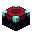

Os Encantamentos
Tudo sobre encantamentos em um só lugar: o melhor para cada item, como encantar e todos os encantamentos do jogo, em ordem, do nível I ao máximo.
Qual o melhor encantamento? Clique em um item
Arraste para o lado para ver todos os itens →

Como encantarExistem três jeitos de colocar encantamentos nos seus itens — e um de tirar.
 Todos os encantamentos
Todos os encantamentos
Separados por tipo de item e em ordem de nível máximo, do menor para o maior. Cada um mostra o que faz em cada nível, do I ao máximo.